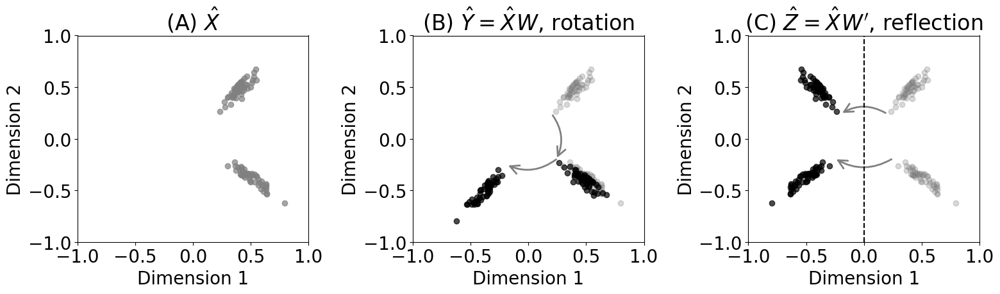
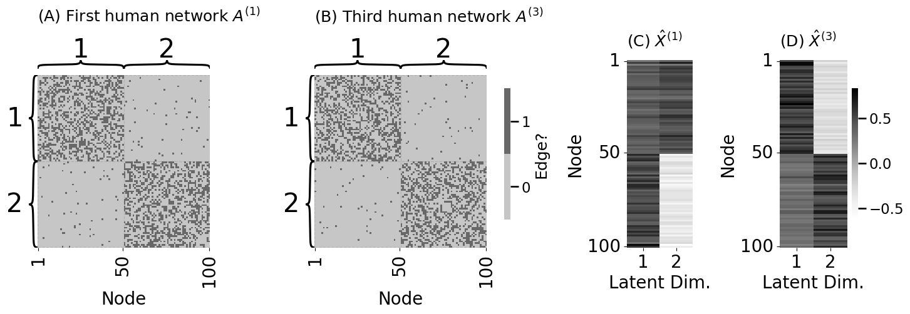
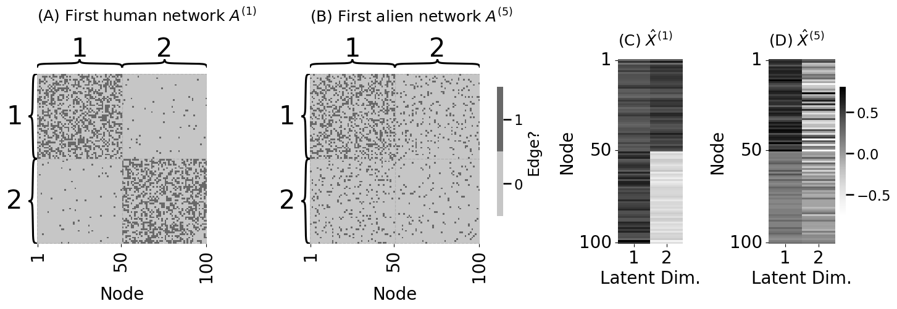
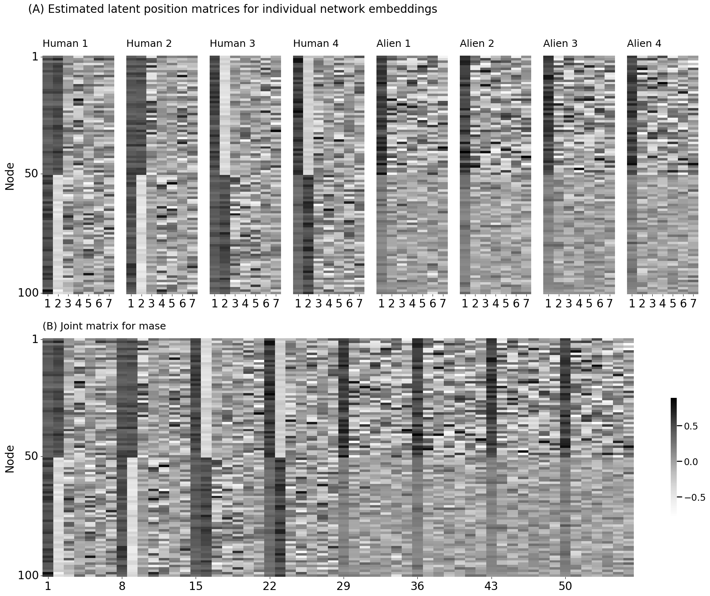
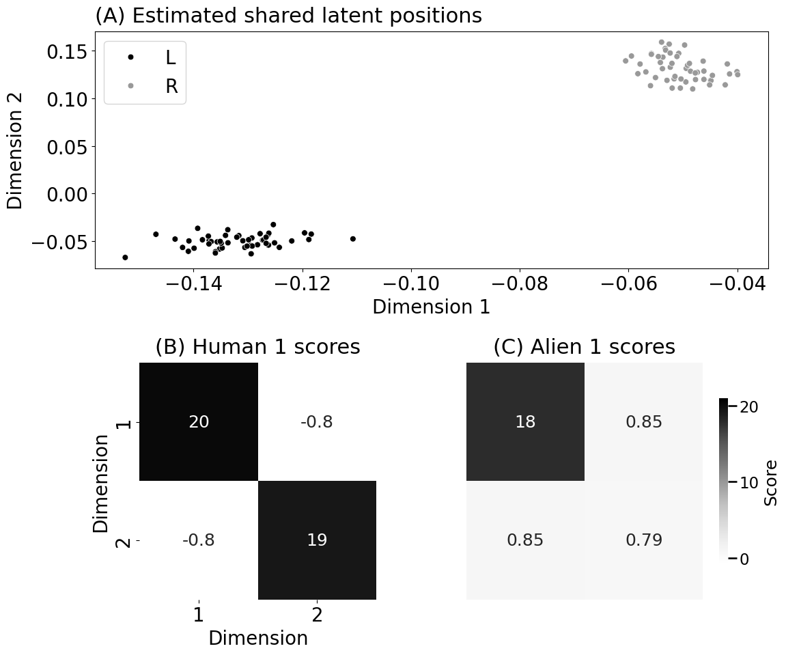
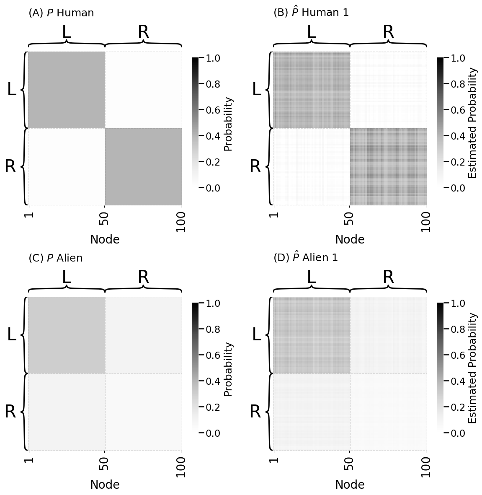
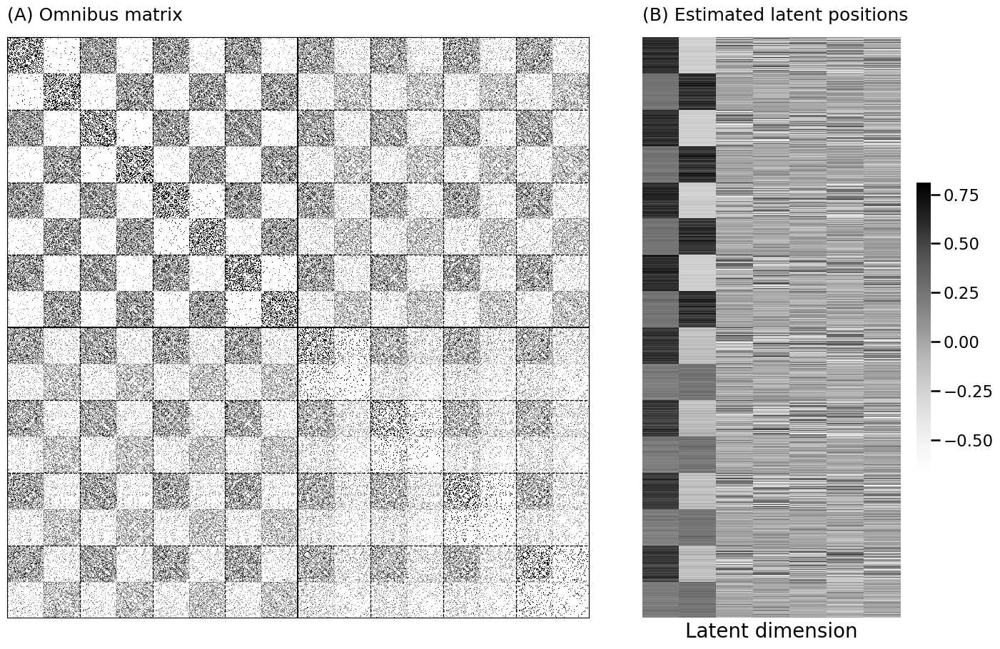
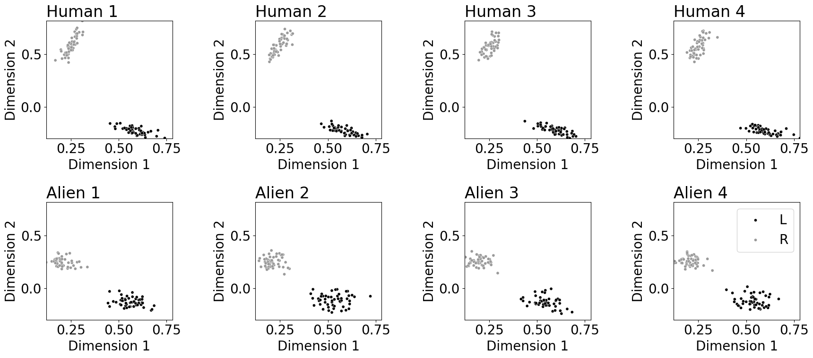

5.5 Multiple network representation learning#
mode = "svg"
import matplotlib
font = {'family' : 'Dejavu Sans',
'weight' : 'normal',
'size' : 20}
matplotlib.rc('font', **font)
import matplotlib
from matplotlib import pyplot as plt
from graspologic.simulations import sbm
import numpy as np
from sklearn.preprocessing import LabelEncoder
import os
n = 100 # the number of nodes
M = 8 # the total number of networks
# human brains have homophilic block structure
Bhuman = np.array([[0.4, 0.02], [0.02, 0.4]])
# alien brains have a core-periphery block structure
Balien = np.array([[0.3, 0.1], [0.1, 0.05]])
# set seed for reproducibility
np.random.seed(0)
# generate 4 human and alien brain networks
A_humans = [sbm([n // 2, n // 2], Bhuman) for i in range(M // 2)]
A_aliens = [sbm([n // 2, n // 2], Balien) for i in range(M // 2)]
# concatenate list of human and alien networks
networks = A_humans + A_aliens
# 1 = left hemisphere, 2 = right hemisphere for node communities
le = LabelEncoder()
labels = np.repeat(["L", "R"], n//2)
zs = le.fit_transform(labels) + 1
from mpl_toolkits.axes_grid1 import ImageGrid
from graphbook_code import heatmap
import os
fig = plt.figure(figsize=(14,7))
grid1 = ImageGrid(fig, 121, (2, 2), axes_pad=.1, share_all=True)
grid2 = ImageGrid(fig, 122, (2, 2), axes_pad=.1, share_all=True)
for i, (axi, axj) in enumerate(zip(grid1, grid2)):
hmn = heatmap(A_humans[i].astype(int), ax=axi, cbar=False)
hma = heatmap(A_aliens[i].astype(int), ax=axj, cbar=False)
grid1.axes_all[0].set_title("(A) Human Brain Networks", fontsize=24, y=1, loc="left")
grid2.axes_all[0].set_title("(B) Alien Brain Networks", fontsize=24, y=1, loc="left")
fig.tight_layout()
os.makedirs("Figures", exist_ok=True)
fname = "multi_ex"
if mode != "png":
os.makedirs(f"Figures/{mode:s}", exist_ok=True)
fig.savefig(f"Figures/{mode:s}/{fname:s}.{mode:s}")
os.makedirs("Figures/png", exist_ok=True)
fig.savefig(f"Figures/png/{fname:s}.png")
/tmp/ipykernel_4439/1108938879.py:16: UserWarning: This figure includes Axes that are not compatible with tight_layout, so results might be incorrect.
fig.tight_layout()
from graspologic.embed import AdjacencySpectralEmbed as ase
# embed the first network with a seed for reproducibility
Xhat = ase(n_components=2, svd_seed=0).fit_transform(A_humans[0])
# a rotation by 90 degrees
W = np.array([[0, -1], [1, 0]])
Yhat = Xhat @ W
# check that probability matrix is the same
np.allclose(Yhat @ Yhat.transpose(), Xhat @ Xhat.transpose())
# returns True
True
# a reflection across first latent dimension
Wp = np.array([[-1, 0], [0, 1]])
Zhat = Xhat @ Wp
# check that the probability matrix is the same
# check that probability matrix is the same
np.allclose(Zhat @ Zhat.transpose(), Xhat @ Xhat.transpose())
# returns True
True
from matplotlib import patches
fig, axs = plt.subplots(1, 3, figsize=(16, 5))
axs[0].scatter(Xhat[:,0], Xhat[:,1], color="gray", alpha=0.7)
axs[0].set_xlim([-1,1])
axs[0].set_ylim([-1,1])
axs[0].set_title("(A) $\\hat X$")
axs[0].set_xlabel("Dimension 1")
axs[0].set_ylabel("Dimension 2")
arrow_dat = {}
for z in np.unique(zs):
center_unrot = Xhat[zs == z,:].mean(axis=0)
center_rot = Yhat[zs == z,:].mean(axis=0)
arrow_dat[z] = {"unrot": center_unrot, "rot": center_rot}
axs[1].scatter(Xhat[:,0], Xhat[:,1], color="gray", alpha=0.3)
axs[1].scatter(Yhat[:,0], Yhat[:,1], color="black", alpha=0.7)
axs[1].set_xlim([-1,1])
axs[1].set_ylim([-1,1])
axs[1].set_title("(B) $\\hat Y = \\hat X W$, rotation")
axs[1].set_xlabel("Dimension 1")
axs[1].set_ylabel("Dimension 2")
style = "->, head_length=10, head_width=5, scaleB=10, scaleA=10"
kw = dict(arrowstyle=style, color="gray", linewidth=2)
for z in arrow_dat.keys():
arrow = arrow_dat[z]
axs[1].add_patch(patches.FancyArrowPatch(arrow["unrot"]*.5, arrow["rot"]*.5, connectionstyle="arc3,rad=-.3", **kw))
axs[2].scatter(Xhat[:,0], Xhat[:,1], color="gray", alpha=0.3)
axs[2].scatter(Zhat[:,0], Zhat[:,1], color="black", alpha=0.7)
axs[2].set_xlim([-1,1])
axs[2].set_ylim([-1,1])
axs[2].set_title("(C) $\\hat Z = \\hat X W'$, reflection")
axs[2].set_xlabel("Dimension 1")
axs[2].set_ylabel("Dimension 2")
axs[2].axvline(0, color="black", linestyle="--")
style = "->, head_length=10, head_width=5, scaleB=10, scaleA=10"
kw = dict(arrowstyle=style, color="gray", linewidth=2)
arrow_dat = {}
for z in np.unique(zs):
center_unrot = Xhat[zs == z,:].mean(axis=0)
center_rot = Zhat[zs == z,:].mean(axis=0)
arrow_dat[z] = {"unrot": center_unrot, "rot": center_rot}
connect_sty=["arc3,rad=.3", "arc3,rad=-.3"]
for i, z in enumerate(arrow_dat.keys()):
arrow = arrow_dat[z]
axs[2].add_patch(patches.FancyArrowPatch(arrow["unrot"]*.5, arrow["rot"]*.5, connectionstyle=connect_sty[i], **kw))
fig.tight_layout()
fname = "rotation"
if mode != "png":
fig.savefig(f"Figures/{mode:s}/{fname:s}.{mode:s}")
fig.savefig(f"Figures/png/{fname:s}.png")

# embed the third human network
Xhat3 = ase(n_components=2, svd_seed=0).fit_transform(A_humans[3])
from graphbook_code import lpm_heatmap
fig, axs = plt.subplots(1, 4, figsize=(15, 5), gridspec_kw = {"width_ratios": [1, 1.27, .35, .45]})
heatmap(A_humans[0].astype(int), cbar=False, ax=axs[0],
xticks=[0.5, 49.5, 99.5], xticklabels=[1, 50, 100], xtitle="Node",
inner_hier_labels=zs, title="(A) First human network $A^{(1)}$")
heatmap(A_humans[1].astype(int), legend_title="Edge?", ax=axs[1],
xticks=[0.5, 49.5, 99.5], xticklabels=[1, 50, 100], xtitle="Node",
inner_hier_labels=zs, title="(B) Third human network $A^{(3)}$")
vmin = np.min([Xhat, Xhat3]); vmax = np.max([Xhat, Xhat3])
lpm_heatmap(Xhat, xtitle="Latent Dim.", xticks=[0.5, 1.5], xticklabels=[1, 2],
yticks=[0.5, 49.5, 99.5], yticklabels=[1, 50, 100], ytitle="Node",
ax=axs[2], cbar=False, vmin=vmin, vmax=vmax, title="(C) $\\hat X^{(1)}$")
lpm_heatmap(Xhat3, xtitle="Latent Dim.", xticks=[0.5, 1.5], xticklabels=[1, 2],
yticks=[0.5, 49.5, 99.5], yticklabels=[1, 50, 100], ytitle="Node",
ax=axs[3], vmin=vmin, vmax=vmax, title="(D) $\\hat X^{(3)}$", shrink=0.7)
fig.tight_layout()
fname = "cmp_identical"
if mode != "png":
fig.savefig(f"Figures/{mode:s}/{fname:s}.{mode:s}")
fig.savefig(f"Figures/png/{fname:s}.png")

# embed the first alien network
Xhat_alien = ase(n_components=2, svd_seed=0).fit_transform(A_aliens[0])
fig, axs = plt.subplots(1, 4, figsize=(15, 5), gridspec_kw = {"width_ratios": [1, 1.27, .35, .45]})
heatmap(A_humans[0].astype(int), cbar=False, ax=axs[0],
xticks=[0.5, 49.5, 99.5], xticklabels=[1, 50, 100], xtitle="Node",
inner_hier_labels=zs, title="(A) First human network $A^{(1)}$")
heatmap(A_aliens[0].astype(int), legend_title="Edge?", ax=axs[1],
xticks=[0.5, 49.5, 99.5], xticklabels=[1, 50, 100], xtitle="Node",
inner_hier_labels=zs, title="(B) First alien network $A^{(5)}$")
vmin = np.min([Xhat, Xhat_alien]); vmax = np.max([Xhat, Xhat_alien])
lpm_heatmap(Xhat, xtitle="Latent Dim.", xticks=[0.5, 1.5], xticklabels=[1, 2],
yticks=[0.5, 49.5, 99.5], yticklabels=[1, 50, 100], ytitle="Node",
ax=axs[2], cbar=False, vmin=vmin, vmax=vmax, title="(C) $\\hat X^{(1)}$")
lpm_heatmap(Xhat_alien, xtitle="Latent Dim.", xticks=[0.5, 1.5], xticklabels=[1, 2],
yticks=[0.5, 49.5, 99.5], yticklabels=[1, 50, 100], ytitle="Node",
ax=axs[3], vmin=vmin, vmax=vmax, title="(D) $\\hat X^{(5)}$", shrink=0.7)
fig.tight_layout()
fname = "cmp_diss"
if mode != "png":
fig.savefig(f"Figures/{mode:s}/{fname:s}.{mode:s}")
fig.savefig(f"Figures/png/{fname:s}.png")

# compute frob norm between first human and third human net
# estimated latent positions
dist_firsthum_thirdhum = np.linalg.norm(Xhat - Xhat3, ord="fro")
print("Frob. norm(first human, third human) = {:3f}".format(dist_firsthum_thirdhum))
# compute frob norm between first human and first alien net
# estimated latent positions
dist_firsthum_alien = np.linalg.norm(Xhat - Xhat_alien, ord="fro")
print("Frob. norm(first human, alien) = {:3f}".format(dist_firsthum_alien))
Frob. norm(first human, third human) = 8.798482
Frob. norm(first human, alien) = 5.991560
from graphbook_code import GraphColormap
import seaborn as sns
from graphbook_code import plot_latents
from graspologic.embed import MultipleASE as mase
def rm_ticks(ax, x=False, y=False, **kwargs):
if x is not None:
ax.axes.xaxis.set_visible(x)
if y is not None:
ax.axes.yaxis.set_visible(y)
sns.despine(ax=ax, **kwargs)
fig = plt.figure()
# add stack of heatmaps
for i in range(8):
ax = fig.add_axes([.02*i, -.02*i, .5, .5])
ax = heatmap(networks[i].astype(int), ax=ax, cbar=False)
if i == 0:
ax.set_title("Adjacency Matrices", loc="left", fontsize=20)
rm_ticks(ax, top=False, right=False)
ax.vlines(n, 0, n*2, colors="black", lw=.9, linestyle="dashed", alpha=.8)
ax.hlines(n, 0, n*2, colors="black", lw=.9, linestyle="dashed", alpha=.8)
# add arrow
arrow_ax = fig.add_axes([.58, .2, .3, .1])
rm_ticks(arrow_ax, left=True, bottom=True)
plt.arrow(x=0, y=0, dx=1, dy=0, width=.1, color="black")
joint_latents = []
# add stack of latent plots
for i in range(8):
ax = fig.add_axes([.9+.02*i, -.02*i, .35, .5])
if i == 0:
ax.set_title("Separate Embeddings", fontsize=20)
latents = ase(n_components=2).fit_transform(networks[i])
joint_latents.append(latents)
plot = plot_latents(latents, s=10, ax=ax)
rm_ticks(ax, top=False, right=False)
# add second arrow
arrow_ax = fig.add_axes([1.4, .2, .3, .1])
rm_ticks(arrow_ax, left=True, bottom=True)
plt.arrow(x=0, y=0, dx=1, dy=0, width=.1, color="black")
# add group embeddings
mase_ax = fig.add_axes([1.71, -.03, .35, .5])
lpm_heatmap(np.hstack(joint_latents), ax=mase_ax, cbar=False)
mase_ax.set_title("Joint Matrix", fontsize=20)
rm_ticks(mase_ax, top=False, right=False)
# add third arrow
arrow_ax = fig.add_axes([2.13, .2, .3, .1])
rm_ticks(arrow_ax, left=True, bottom=True)
plt.arrow(x=0, y=0, dx=1, dy=0, width=.1, color="black")
mase = mase(n_components=2)
latents_mase = mase.fit_transform(networks)
mase_ax = fig.add_axes([2.45, -.03, .35, .5])
plot_latents(latents_mase, ax=mase_ax)
mase_ax.set_title("Joint Embedding", fontsize=20)
rm_ticks(mase_ax, top=False, right=False)
fig.tight_layout(pad=1.5, w_pad=1.0, h_pad=1.0)
fname = "comb_emb"
if mode != "png":
fig.savefig(f"Figures/{mode:s}/{fname:s}.{mode:s}", bbox_inches='tight')
fig.savefig(f"Figures/png/{fname:s}.png", bbox_inches='tight')
/opt/hostedtoolcache/Python/3.12.9/x64/lib/python3.12/site-packages/graphbook_code/plotting.py:502: UserWarning: Ignoring `palette` because no `hue` variable has been assigned.
plot = sns.scatterplot(
/opt/hostedtoolcache/Python/3.12.9/x64/lib/python3.12/site-packages/graphbook_code/plotting.py:502: UserWarning: Ignoring `palette` because no `hue` variable has been assigned.
plot = sns.scatterplot(
/opt/hostedtoolcache/Python/3.12.9/x64/lib/python3.12/site-packages/graphbook_code/plotting.py:502: UserWarning: Ignoring `palette` because no `hue` variable has been assigned.
plot = sns.scatterplot(
/opt/hostedtoolcache/Python/3.12.9/x64/lib/python3.12/site-packages/graphbook_code/plotting.py:502: UserWarning: Ignoring `palette` because no `hue` variable has been assigned.
plot = sns.scatterplot(
/opt/hostedtoolcache/Python/3.12.9/x64/lib/python3.12/site-packages/graphbook_code/plotting.py:502: UserWarning: Ignoring `palette` because no `hue` variable has been assigned.
plot = sns.scatterplot(
/opt/hostedtoolcache/Python/3.12.9/x64/lib/python3.12/site-packages/graphbook_code/plotting.py:502: UserWarning: Ignoring `palette` because no `hue` variable has been assigned.
plot = sns.scatterplot(
/opt/hostedtoolcache/Python/3.12.9/x64/lib/python3.12/site-packages/graphbook_code/plotting.py:502: UserWarning: Ignoring `palette` because no `hue` variable has been assigned.
plot = sns.scatterplot(
/opt/hostedtoolcache/Python/3.12.9/x64/lib/python3.12/site-packages/graphbook_code/plotting.py:502: UserWarning: Ignoring `palette` because no `hue` variable has been assigned.
plot = sns.scatterplot(
/opt/hostedtoolcache/Python/3.12.9/x64/lib/python3.12/site-packages/graphbook_code/plotting.py:502: UserWarning: Ignoring `palette` because no `hue` variable has been assigned.
plot = sns.scatterplot(
/tmp/ipykernel_4439/3160597387.py:64: UserWarning: This figure includes Axes that are not compatible with tight_layout, so results might be incorrect.
fig.tight_layout(pad=1.5, w_pad=1.0, h_pad=1.0)
from graspologic.embed import OmnibusEmbed as omni
from graspologic.embed.omni import _get_omni_matrix
fig = plt.figure();
# add stack of heatmaps
for i in range(8):
ax = fig.add_axes([.02*i, -.02*i, .8, .8])
ax = heatmap(networks[i].astype(int), ax=ax, cbar=False)
if i == 0:
ax.set_title("Adjacency Matrices", loc="left", fontsize=20)
rm_ticks(ax, top=False, right=False)
ax.vlines(n, 0, n*2, colors="black", lw=.9, linestyle="dashed", alpha=.8)
ax.hlines(n, 0, n*2, colors="black", lw=.9, linestyle="dashed", alpha=.8)
# add arrow
arrow_ax = fig.add_axes([.82, .3, .3, .1])
rm_ticks(arrow_ax, left=True, bottom=True)
plt.arrow(x=0, y=0, dx=1, dy=0, width=.1, color="black")
# add joint matrix
omni_ax = fig.add_axes([1, -.02*3, .8, .8])
A = _get_omni_matrix(networks)
a_hm = heatmap(A, ax=omni_ax, cbar=False)
a_hm.set_title("Joint Matrix", loc="left", fontsize=20)
for _, spine in a_hm.spines.items():
spine.set_visible(True)
# add second arrow
arrow_ax = fig.add_axes([1.75, .3, .3, .1])
rm_ticks(arrow_ax, left=True, bottom=True)
plt.arrow(x=0, y=0, dx=1, dy=0, width=.1, color="black")
# add omni embedding
latents_omni = omni(n_components=2).fit_transform(networks)
for i, embedding in enumerate(latents_omni):
ax = fig.add_axes([2.1+.02*i, -.02*i, .55, .8])
if i == 0:
ax.set_title("Separate Embeddings", loc="left", fontsize=20)
plot = plot_latents(latents_omni[i,:,:], ax=ax)
rm_ticks(ax, top=False, right=False)
fig.tight_layout(pad=1.5, w_pad=1.0, h_pad=1.0)
fname = "comb_sep"
if mode != "png":
fig.savefig(f"Figures/{mode:s}/{fname:s}.{mode:s}", bbox_inches='tight')
fig.savefig(f"Figures/png/{fname:s}.png", bbox_inches='tight')
/opt/hostedtoolcache/Python/3.12.9/x64/lib/python3.12/site-packages/graphbook_code/plotting.py:502: UserWarning: Ignoring `palette` because no `hue` variable has been assigned.
plot = sns.scatterplot(
/opt/hostedtoolcache/Python/3.12.9/x64/lib/python3.12/site-packages/graphbook_code/plotting.py:502: UserWarning: Ignoring `palette` because no `hue` variable has been assigned.
plot = sns.scatterplot(
/opt/hostedtoolcache/Python/3.12.9/x64/lib/python3.12/site-packages/graphbook_code/plotting.py:502: UserWarning: Ignoring `palette` because no `hue` variable has been assigned.
plot = sns.scatterplot(
/opt/hostedtoolcache/Python/3.12.9/x64/lib/python3.12/site-packages/graphbook_code/plotting.py:502: UserWarning: Ignoring `palette` because no `hue` variable has been assigned.
plot = sns.scatterplot(
/opt/hostedtoolcache/Python/3.12.9/x64/lib/python3.12/site-packages/graphbook_code/plotting.py:502: UserWarning: Ignoring `palette` because no `hue` variable has been assigned.
plot = sns.scatterplot(
/opt/hostedtoolcache/Python/3.12.9/x64/lib/python3.12/site-packages/graphbook_code/plotting.py:502: UserWarning: Ignoring `palette` because no `hue` variable has been assigned.
plot = sns.scatterplot(
/opt/hostedtoolcache/Python/3.12.9/x64/lib/python3.12/site-packages/graphbook_code/plotting.py:502: UserWarning: Ignoring `palette` because no `hue` variable has been assigned.
plot = sns.scatterplot(
/opt/hostedtoolcache/Python/3.12.9/x64/lib/python3.12/site-packages/graphbook_code/plotting.py:502: UserWarning: Ignoring `palette` because no `hue` variable has been assigned.
plot = sns.scatterplot(
/tmp/ipykernel_4439/959093946.py:43: UserWarning: This figure includes Axes that are not compatible with tight_layout, so results might be incorrect.
fig.tight_layout(pad=1.5, w_pad=1.0, h_pad=1.0)
from graspologic.embed import MultipleASE as mase
# Use mase to embed everything
mase = mase(n_components=2, svd_seed=0)
# fit_transform on the human and alien networks simultaneously
latents_mase = mase.fit_transform(networks)
from graspologic.embed import AdjacencySpectralEmbed as ase
dhat = int(np.ceil(np.log2(n)))
# spectrally embed each network into ceil(log2(n)) dimensions with ASE
separate_embeddings = [ase(n_components=dhat, svd_seed=0).fit_transform(network) for network in networks]
fig, axs = plt.subplots(1, 2, figsize=(12, 5))
ax = plot_latents(separate_embeddings[0], labels=labels, title="(A) Human Embedding",
palette={"L": "#000000", "R": "#999999"}, s=30, ax=axs[0], legend=True)
ax.get_legend().remove()
plot_latents(separate_embeddings[4], labels=labels, title="(B) Alien Embedding",
palette={"L": "#000000", "R": "#999999"}, s=30, ax=axs[1], legend=True)
fig.tight_layout()
fname = "mase_ase"
if mode != "png":
fig.savefig(f"Figures/{mode:s}/{fname:s}.{mode:s}")
fig.savefig(f"Figures/png/{fname:s}.png")

# Concatenate your embeddings horizontally into a single n x Md matrix
joint_matrix = np.hstack(separate_embeddings)
import matplotlib.gridspec as gridspec
# Create a figure
fig = plt.figure(figsize=(20, 15))
# Create a GridSpec object
gs = gridspec.GridSpec(2, 9)
vmin = np.min(joint_matrix); vmax=np.max(joint_matrix)
for i, network in enumerate(networks):
ax = fig.add_subplot(gs[0, i])
title = f"Human {i+1}" if i < 4 else f"Alien {i-3}"
if i == 0:
lpm_heatmap(separate_embeddings[i], ax=ax, vmin=vmin, vmax=vmax, cbar=False,
xticks=[0.5, 1.5, 2.5, 3.5, 4.5, 5.5, 6.5], xticklabels=[1,2,3,4,5,6,7],
yticks=[0.5, 49.5, 99.5], yticklabels=[1,50,100], ytitle="Node", title=title)
else:
lpm_heatmap(separate_embeddings[i], ax=ax, vmin=vmin, vmax=vmax, cbar=False,
xticks=[0.5, 1.5, 2.5, 3.5, 4.5, 5.5, 6.5], xticklabels=[1,2,3,4,5,6,7], title=title)
plt.suptitle("(A) Estimated latent position matrices for individual network embeddings", fontsize=20, x=0.3, y=1.0)
ax = fig.add_subplot(gs[1, :])
lpm_heatmap(joint_matrix, xticks=[0.5, 7.5, 14.5, 21.5, 28.5, 35.5, 42.5,49.5], xticklabels=[1,8,15,22,29,36,43,50],
yticks=[0.5, 49.5, 99.5], yticklabels=[1,50,100], ytitle="Node", ax=ax, title="(B) Joint matrix for mase")
# plt.suptitle("(B) Joint matrix for mase", fontsize=20, x=0.3, y=0.48)
fig.tight_layout()
fname = "mase_embed_joint"
if mode != "png":
fig.savefig(f"Figures/{mode:s}/{fname:s}.{mode:s}")
fig.savefig(f"Figures/png/{fname:s}.png")

def unscaled_embed(X, d, seed=0):
np.random.seed(seed)
U, s, Vt = np.linalg.svd(X)
return U[:,0:d]
Shat = unscaled_embed(joint_matrix, 2)
# stack the networks into a numpy array
As_ar = np.asarray(networks)
# compute the scores
scores = Shat.T @ As_ar @ Shat
# Create a figure
fig = plt.figure(figsize=(12, 10))
# Create a GridSpec object
gs = gridspec.GridSpec(2, 2)
ax = fig.add_subplot(gs[0, :])
plot_latents(Shat, labels=labels, s=40, palette={"L": "#000000", "R": "#999999"},
title="(A) Estimated shared latent positions")
ax.set_xlabel("Dimension 1")
ax.set_ylabel("Dimension 2")
ax.set_title("(A) Estimated shared latent positions", fontsize=22, pad=10, loc="left")
ax = fig.add_subplot(gs[1, 0])
smin=scores.min(); smax=scores.max()
heatmap(scores[0], vmin=smin, vmax=smax, annot=True, ax=ax,
xticks=[0.5, 1.5], xticklabels=[1, 2], yticks=[0.5, 1.5], yticklabels=[1, 2],
xtitle="Dimension", ytitle="Dimension", cbar=False)
ax.set_title("(B) Human 1 scores", fontsize=22, pad=10)
ax = fig.add_subplot(gs[1, 1])
smin=scores.min(); smax=scores.max()
heatmap(scores[4], vmin=smin, vmax=smax, annot=True, ax=ax, legend_title="Score")
ax.set_title("(C) Alien 1 scores", fontsize=22, pad=10)
fig.tight_layout()
fname = "mase_shared_lpm"
if mode != "png":
fig.savefig(f"Figures/{mode:s}/{fname:s}.{mode:s}")
fig.savefig(f"Figures/png/{fname:s}.png")

from graphbook_code import generate_sbm_pmtx
Phum = generate_sbm_pmtx(zs, Bhuman)
Palien = generate_sbm_pmtx(zs, Balien)
Pests = Shat @ scores @ Shat.T
fig, axs = plt.subplots(2, 2, figsize=(12, 12))
heatmap(Phum, ax=axs[0][0], title="(A) $P$ Human", inner_hier_labels=labels, vmin=0, vmax=1,
xticks=[0.5, 49.5, 99.5], xticklabels=[1, 50, 100], xtitle="Node", legend_title="Probability")
heatmap(Pests[0], ax=axs[0][1], title="(B) $\\hat P$ Human 1", inner_hier_labels=labels, vmin=0, vmax=1,
xticks=[0.5, 49.5, 99.5], xticklabels=[1, 50, 100], xtitle="Node", legend_title="Estimated Probability")
heatmap(Palien, ax=axs[1][0], title="(C) $P$ Alien", inner_hier_labels=labels, vmin=0, vmax=1,
xticks=[0.5, 49.5, 99.5], xticklabels=[1, 50, 100], xtitle="Node", legend_title="Probability")
heatmap(Pests[4], ax=axs[1][1], title="(D) $\\hat P$ Alien 1", inner_hier_labels=labels, vmin=0, vmax=1,
xticks=[0.5, 49.5, 99.5], xticklabels=[1, 50, 100], xtitle="Node", legend_title="Estimated Probability")
fig.tight_layout()
fname = "mase_probs"
if mode != "png":
fig.savefig(f"Figures/{mode:s}/{fname:s}.{mode:s}")
fig.savefig(f"Figures/png/{fname:s}.png")

import seaborn as sns
from graphbook_code import text
from graphbook_code import lined_heatmap, add_legend
# fig, axs = plt.subplots(1, 3, figsize=(15, 5))
fig = plt.figure(figsize=(12, 8))
gs = gridspec.GridSpec(2, 3)
ax0 = fig.add_subplot(gs[0, 0])
ax1 = fig.add_subplot(gs[1, 0])
ax_omni = fig.add_subplot(gs[:, 1:])
# first two
omni_cmap = [[1,1,1], [0.5,0.5,0.5], [0,0,0]]
print(omni_cmap)
for i, (ax, data) in enumerate(zip([ax0, ax1], [networks[0], networks[1]])):
title = r"(A) First network ($A^{(1)}$)" if i==0 else r"(B) Second network ($A^{(2)}$)"
heatmap(data, ax=ax, cbar=False, title=title, inner_hier_labels=labels)
from graspologic.embed.omni import _get_omni_matrix
omni = _get_omni_matrix([networks[0], networks[1]])
# big one
hm = lined_heatmap(omni, ax=ax_omni, binary=False, cbar=False,
title="(C) Omnibus Matrix for first \nand second network",
center=None)
# outline
sns.despine(ax=ax_omni, top=False, bottom=False, left=False, right=False)
# separating lines
hm.vlines(len(omni)//2, 0, len(omni), colors="black", lw=.9, alpha=1)
hm.hlines(len(omni)//2, 0, len(omni), colors="black", lw=.9, alpha=1)
for i in [.25, .75]:
hm.vlines(len(omni)*i, 0, len(omni), colors="black", lw=.9, linestyle="dashed", alpha=.6)
hm.hlines(len(omni)*i, 0, len(omni), colors="black", lw=.9, linestyle="dashed", alpha=.6)
# text
t = text(r"$A^{(1)}$", .25, .75, ax=ax_omni)
t.set_bbox(dict(facecolor="white", edgecolor="white"))
t = text(r"$A^{(2)}$", .75, .25, ax=ax_omni)
t.set_bbox(dict(facecolor="white", edgecolor="white"))
t = text(r"$\frac{(A^{(2)} + A^{(1)}}{2}$", .25, .25, ax=ax_omni)
t.set_bbox(dict(facecolor="white", edgecolor="white"))
t = text(r"$\frac{(A^{(1)} + A^{(2)})}{2}$", .75, .75, ax=ax_omni)
t.set_bbox(dict(facecolor="white", edgecolor="white"))
fig.tight_layout()
fname = "omni_ex"
if mode != "png":
fig.savefig(f"Figures/{mode:s}/{fname:s}.{mode:s}")
fig.savefig(f"Figures/png/{fname:s}.png")
[[1, 1, 1], [0.5, 0.5, 0.5], [0, 0, 0]]
from graspologic.embed.omni import _get_omni_matrix
omni_mtx = _get_omni_matrix(networks)
from graspologic.embed import AdjacencySpectralEmbed as ase
dhat = int(np.ceil(np.log2(n)))
Xhat_omni = ase(n_components=dhat, svd_seed=0).fit_transform(omni_mtx)
fig, axs = plt.subplots(1, 2, figsize=(15, 9.5), gridspec_kw={"width_ratios": [2, 1]})
hm = lined_heatmap(omni_mtx, binary=False, cmap=omni_cmap, cbar=False,
title="(A) Omnibus matrix", center=None, alpha=0, ax=axs[0])
sns.despine(ax=hm, top=False, bottom=False, left=False, right=False)
for i in np.arange(8)*1/8:
hm.vlines(len(omni_mtx)*i, 0, len(omni_mtx), colors="black", lw=.9, linestyle="dashed", alpha=1)
hm.hlines(len(omni_mtx)*i, 0, len(omni_mtx), colors="black", lw=.9, linestyle="dashed", alpha=1)
for i in np.arange(1, 16, 2)*1/16:
hm.vlines(len(omni_mtx)*i, 0, len(omni_mtx), colors="black", lw=.9, linestyle="dashed", alpha=.2)
hm.hlines(len(omni_mtx)*i, 0, len(omni_mtx), colors="black", lw=.9, linestyle="dashed", alpha=.2)
hm.vlines(len(omni_mtx)*1/2, 0, len(omni_mtx), colors="black", lw=1.3, linestyle="solid")
hm.hlines(len(omni_mtx)*1/2, 0, len(omni_mtx), colors="black", lw=1.3, linestyle="solid")
lpm_heatmap(Xhat_omni, ax=axs[1], title="(B) Estimated latent positions", xtitle="Latent dimension")
fig.tight_layout()
fname = "omni_mtx"
if mode != "png":
fig.savefig(f"Figures/{mode:s}/{fname:s}.{mode:s}")
fig.savefig(f"Figures/png/{fname:s}.png")

M = len(networks)
n = len(networks[0])
# obtain a M x n x d tensor
Xhat_tensor = Xhat_omni.reshape(M, n, -1)
# the estimated latent positions for the first network
Xhat_human1 = Xhat_tensor[0,:,:]
from graspologic.embed import OmnibusEmbed as omni
# obtain a tensor of the estimated latent positions
Xhat_tensor = omni(n_components=int(np.log2(n)), svd_seed=0).fit_transform(networks)
# obtain the estimated latent positions for the first human
# network
Xhat_human1 = Xhat_tensor[0,:,:]
fig, axs = plt.subplots(2, 4, figsize=(18, 8))
for i in range(4):
plot_latents(Xhat_tensor[i, :, :], ax=axs[0, i], labels=labels, palette={"L": "#000000", "R": "#999999"},
title="Human {:d}".format(i + 1), s=20, xtitle="Dimension 1", ytitle="Dimension 2")
axs[0,i].get_legend().remove()
axs[0,i].set_xlim((Xhat_tensor[:,:,0].min(), Xhat_tensor[:,:,0].max()))
axs[0,i].set_ylim((Xhat_tensor[:,:,1].min(), Xhat_tensor[:,:,1].max()))
for i in range(4):
plot_latents(Xhat_tensor[i+4, :, :], ax=axs[1, i], labels=labels, palette={"L": "#000000", "R": "#999999"},
title="Alien {:d}".format(i + 1), s=20, xtitle="Dimension 1", ytitle="Dimension 2")
if i != 3:
axs[1,i].get_legend().remove()
axs[1,i].set_xlim((Xhat_tensor[:,:,0].min(), Xhat_tensor[:,:,0].max()))
axs[1,i].set_ylim((Xhat_tensor[:,:,1].min(), Xhat_tensor[:,:,1].max()))
fig.tight_layout()
fname = "omni_ind"
if mode != "png":
fig.savefig(f"Figures/{mode:s}/{fname:s}.{mode:s}")
fig.savefig(f"Figures/png/{fname:s}.png")

Phat_hum1 = Xhat_human1 @ Xhat_human1.T